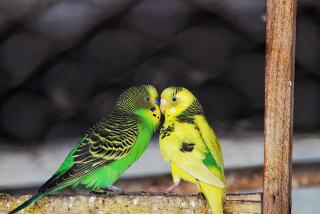
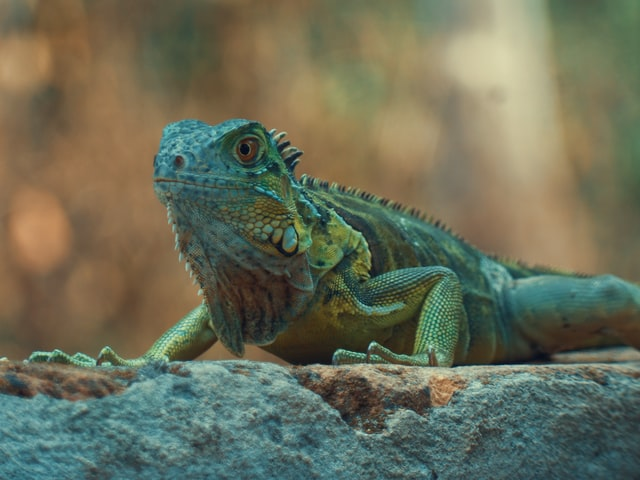

variety of Pets
popular pets
Terry

Fluffy
Nina
Gallery
Turtle
The turtles are reptiles that belong to the order of the Testudines. They have populated the Earth since the Triassic.
Parrot
Some species of parrots have the ability to mimic great diversity of sounds, including the human voice.

Hamster
Hamsters have extendable bags on each side of the face, located inside the mouth and used to transport food or nest material.

Ferret
Ferrets are very active and curious, and although their vision is reduced, they like to play and explore.
Lizard
Most females deposit about 30 eggs into the nest, although some large eggs can deposit up to 60.

Clownfish
They are omnivorous fish and consume a wide variety of foods, including algae, zooplankton and small molluscs and crustaceans.
Sign Me Up
BE THE FIRST TO KNOW ABOUT NEW PRODUCTS